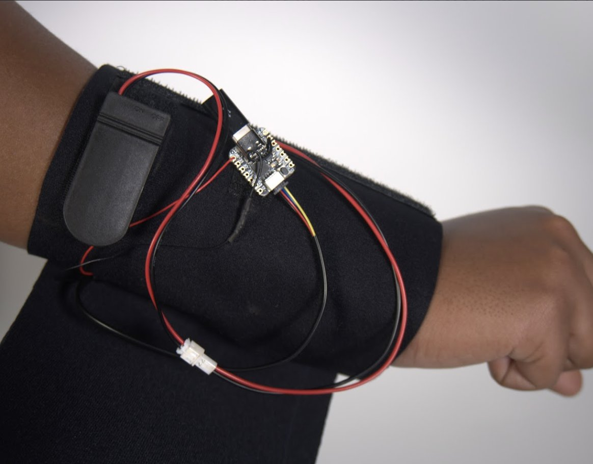

Waiting for the first reading…
Readings arrive every one to three seconds.
Plug the band into this computer and watch, live, how your skin returns light: hydration, surface changes, pigment, and the band’s own neural network reading.
firmware/OncoSense with the Arduino IDE.
Readings arrive every one to three seconds.